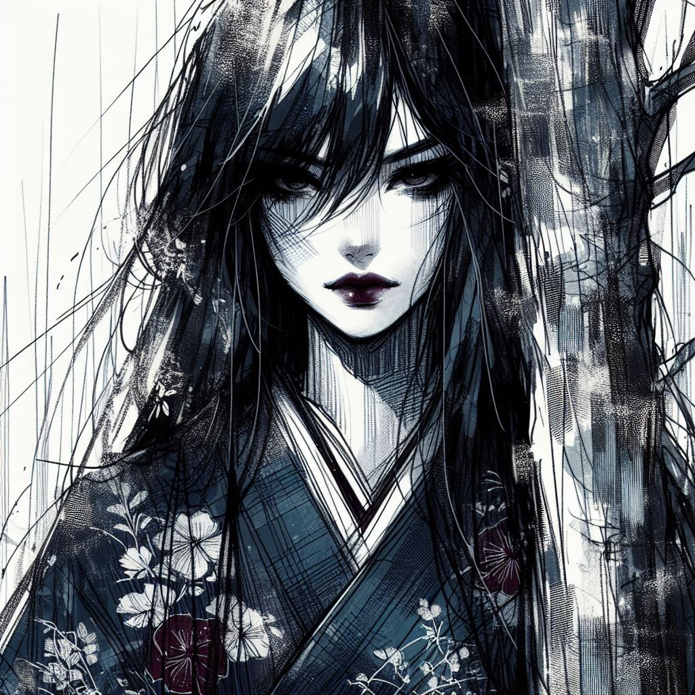

A propos
Voilée dans les susurrements de la nuit, elle est l'évanescence, une étreinte entre le songe et le souffle du vent, la silhouette de Komayō. Son passage, plus silencieux que le battement d'aile d'un papillon de nuit, est une caresse fugitive sur l'échine du crépuscule.
Elle est le reflet sur l'eau sombre, jamais la même à qui ose la contempler. Dans ses yeux, luit l'abysse, promesse d'une profondeur où se perdent les étoiles. Sa présence, plus sentie que vue, est une rumeur parmi les feuilles, un frémissement dans l'air chargé d'orages lointains.

Elle est le vertige au bord d'un rêve, le murmure d'un désir que l'on craint d'assouvir. Komayō, sans jamais prononcer son nom, sans jamais dévoiler son jeu, est la poésie inachevée, le secret gardé par l'aube, l'énigme que la nuit refuse de révéler.